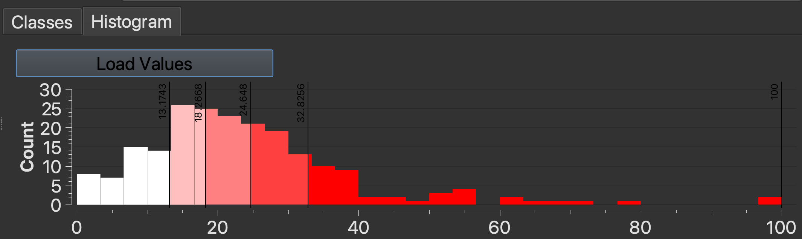

Visualizing GIS data
5 min readGuiding question: When we layer social data over environmental data, what patterns emerge? How does the visual contrast between populations and tree cover help us identify where resources are concentrated?
In this tutorial, we are going to demonstrate how to map both nominal and interval data, using Environmental Justice Population and Tree Cover data as examples.
- Nominal data refers to categories without any inherent numerical relationship.
- Interval data refers to a numerical scale where the distance between numbers is known and consistent.
You can use this understanding to leverage cartographic conventions and software templates designed for each level of measurement.
Datasets
Mock researcher question: Are cooling resources in the city fairly distributed?
- We are going to use the
EJ_CRIT_DEfield of the Environmental Justice Populations by Census Block Group, Boston, Massachusetts, 2020 to mapnominaldata.EJ_CRIT_DErefers to the EJ criteria description. Each census block group is assigned a category, e.g.English isolation;Minority and income, etc. - We are going to use the
Percent_Trfield of the Tree Canopy Percentage by Census Tract (CT), Boston, Massachusetts, 2019 to mapintervaldata.Percent_Trrefers to the tree canopy per census tract as a percentage of total land cover. These values are represented as percentages, e.g.23.05%;14.25%, etc.
Requirements
The instructor will demo next steps in QGIS. Participants are not required to follow along. If you wish to follow-along in class or later at home, you will need:
- QGIS [Download instructions]
- The sample data is available from the Harvard Geospatial Library (HGL), and also pre-packaged for the workshop. [Workshop data]
Nominal Data
-
Start a new QGIS project and add the Environmental Justice Populations by Census Block dataset (downloaded to your computer) to the QGIS project by either: (1) dragging the file with the
.shpfile extension directly into the QGIS window from your file browser, or (2) using the menu navigationLayer→Add Layer→Add Vector Layerand using theData Source Managerto select the file with the.shpfile extension, then selectingAddandClose. -
Open the EJ Population layer properties by either double-clicking the layer in the
Layerspane, or right-clicking the layer and selectingProperties. -
From the
Propertieswindow, selectSymbologyfrom the menu. -
Click where it says
Single Symbol, and selectCategorized. This is the QGIS template for symbolizingnominaldata. -
Underneath where it says
Categorized, there is a field calledValue. Click arrow to the right of this field, to open a drop-down menu. This lets you select which attribute or variable you want to symbolize. -
Select
EJ_CRIT_DE. -
Click
Classify.
Tip: QGIS will select colors at random to symbolize the data categories. To have more control over how your map looks, you can use a tool developed by cartographers called Color Brewer. Using Color Brewer, select the Nature of your data = Qualitative (nominal), and the number of classes you'd like (e.g. 7), to generate color schemes well-suited for mapping. The website will provide color codes you can copy-paste into QGIS. Double-click the colorful squares in QGIS to open the individual color properties.
-
In the QGIS
Symbology Propertiesmenu, selectApplyand thenOK. -
Your map will now be symbolized by Environmental Justice Population criteria category. In the
Layerspane, engage the toggle drop-down arrow to the left of the EJ Population layer to reveal the map legend.
Interval Data
-
Add the Tree Canopy Percentage by Census Tract (CT), Boston, Massachusetts, 2019 dataset to the same QGIS project by either: (1) dragging the file with the
.shpfile extension directly into the QGIS window from your file browser, or (2) using the menu navigationLayer→Add Layer→Add Vector Layerand using theData Source Managerto select the file with the.shpfile extension, then selectingAddandClose. -
Open the tree canopy layer properties by either double-clicking the layer in the
Layerspane, or right-clicking the layer and selectingProperties. -
From the
Propertieswindow, selectSymbologyfrom the menu. -
Click where it says
Single Symbol, and selectGraduated. This is the QGIS template for symbolizingintervaldata. -
Underneath where it says
Graduated, there is a field forValue. Click arrow to the right of this field, to open a drop-down menu. This lets you select which attribute or variable you want to symbolize. -
Select
Percent_Tr. -
Click
Classify. You will notice this populates your data classification with a graduated color ramp to represent density of the variable selected.
Graduated symbology tips
Here are some considerations for working with graduated symbology:
- You will need to choose a classification
Modese.g.Equal Count,Equal Interval. To support your understanding, you can refer to mode documentation.- It is typical when exploring your data to try out various classification
Modes.- The
Histogramtab is a helpful tool for understanding the distribution of your data values. This tool is located next to theClassestab. ClickLoad Valuesto display the diagram.
- Once you have a better sense of your dataset using these exploratory tools, you will be better positioned to identify which classification
Modewould be suitable for any published or rhetorical maps you make.- The choices you make for classification
Modewill impact how readers interpret your data.- You will also want to consider color. You can use Color Brewer to select a color scheme. Let’s use green since we are representing tree canopy.
- Select
Applyand thenOK.
💡 Discussion: Toggle the layers in the
Layerspane using the checkboxes to compare the two maps. What do you observe? If you could plant 1,000 new trees, where on the map would you put them?